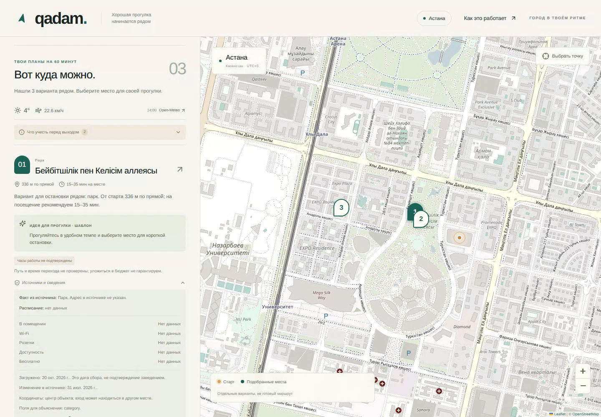

QADAM — презентация проекта
Астана · Smart City
QADAM
Хорошая прогулка
начинается рядом
Есть час. Есть город.
Нужны три понятных варианта.
01 / 08
Контекст вместо длинного списка
На что у тебя есть время?
01
Прогуляться
30–90 минут рядом.
Место, занятие и понятная оценка.
02
Кофе и ноутбук
Обязательную розетку подтверждаем данными.
03
С ребёнком
Парки, площадки и музеи с учётом контекста.
Для жителей, студентов и гостей города. Решение за полминуты — гипотеза UX, которую ещё нужно проверить с людьми.
02 / 08
Пользовательский путь
Точка → интерес → варианты
1Выбрать EXPO из локальных ориентиров.
2Попросить прогулку на 60 минут.
3Посмотреть источник и место на карте.
4Сократить время — получить новый подбор.

03 / 08
Данные и RAG
Места из города,
объяснения из найденных данных
OpenStreetMap → snapshot и нормализация
Локальный индекс → география и ограничения
E5 + FTS5 → ранжированный набор POI
Gemini → проверка ID и evidence → карточки
814 POI · сбор 20.10.2026 · 5 ориентиров отдельно. © OpenStreetMap contributors · ODbL 1.0.
04 / 08
Доверие к ответу
Неизвестное остаётся неизвестным
Факт
Название, категория и свойства со ссылкой на источник.
Расчёт
Расстояние и время посещения. Без routing нет обещания успеть.
Идея
Чем заняться. Отдельная подпись у предложения генератора.
Часы, розетки и безбарьерность не выводятся из категории места. Погода имеет отметку времени; недоступный сервис не подменяется прогнозом.
05 / 08
Проверка прототипа
Результаты, которые можно повторить
59 автоматических тестов · 12 браузерных проверок
11 / 12 заданных мест найдены в top-3
41 мс — медиана 9 тёплых API запросов без LLM
Сложный сценарий: обязательная розетка
Без подтверждения — отсутствие подходящих мест.
Это полезный результат, а не повод выдумать услугу.
Маленькая выборка поиска по названиям, не общая оценка релевантности. Live LLM не проверен: нужен ключ. Метод: docs/verification.md.
06 / 08
Приватность и развитие
Локальный подбор.
Понятные внешние обращения.
Прототип
Без аккаунта и истории поиска. Геолокация необязательна.
LLM получает категории и разрешённые данные POI. Погода — округлённую точку. Карта обращается к серверу тайлов.
B2B-гипотеза
Городские сервисы, гостиницы, университеты и культурные площадки.
Партнёрства и выручка не заявлены. Продвижение — только с маркировкой и сохранением релевантности.
Данные могут быть неполными. Доступность места и пути нужно проверять; обещаний безопасности и гарантии времени нет.
07 / 08
Следующий шаг
Проверить на прогулке
Реальные входы.
Подтверждённые свойства.
Обратная связь пользователей.
Локальное демо: http://127.0.0.1:8000
Запуск и материалы: README.md
Для полного RAG нужен серверный GEMINI_API_KEY.
Публичная публикация и YouTube выполняются из аккаунта владельца.
08 / 08